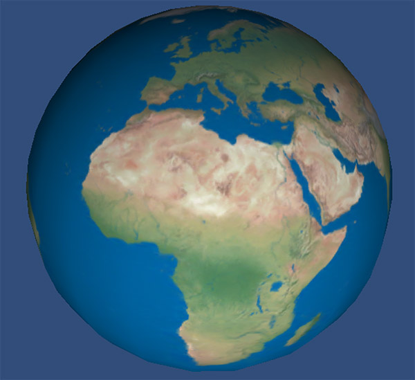
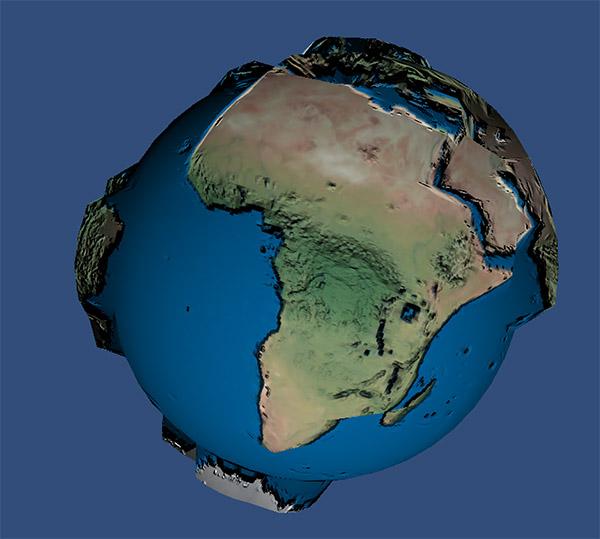
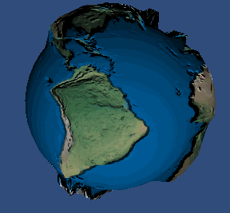
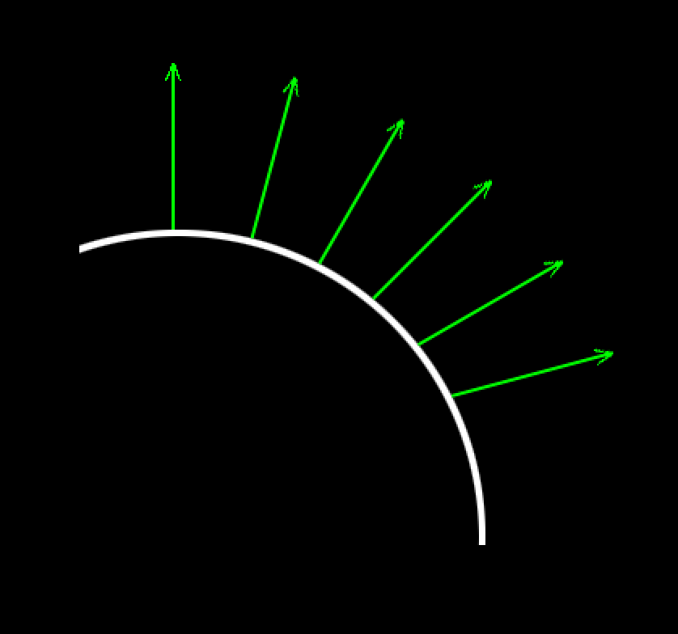
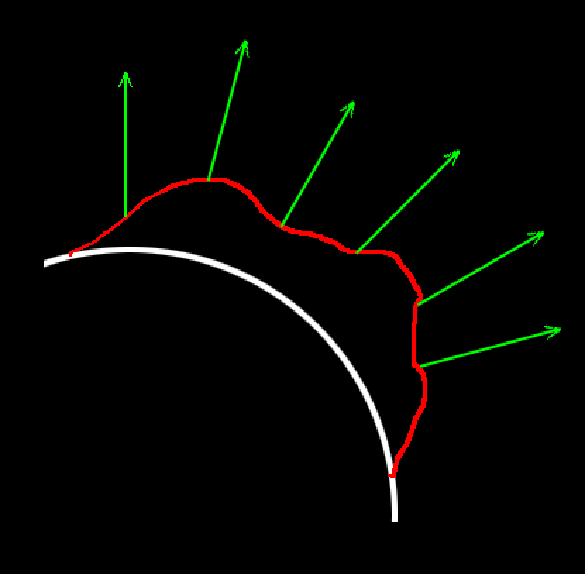
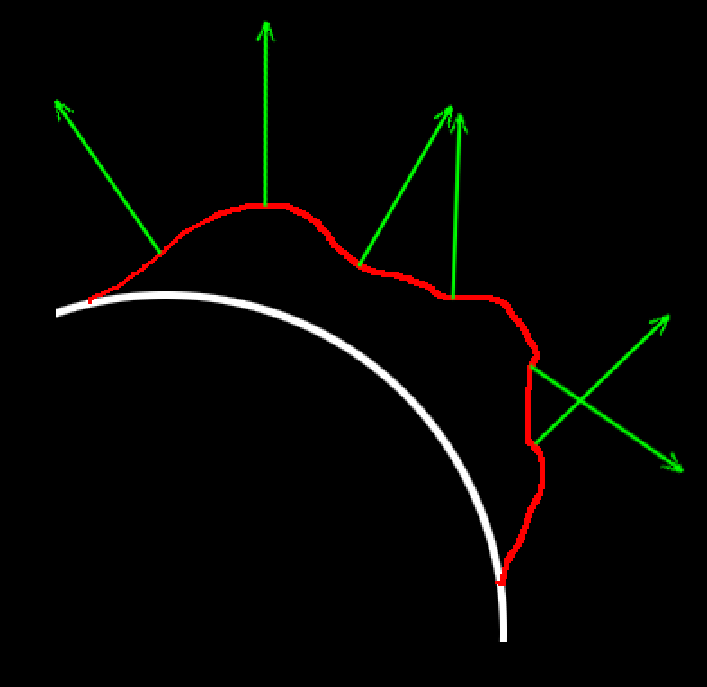
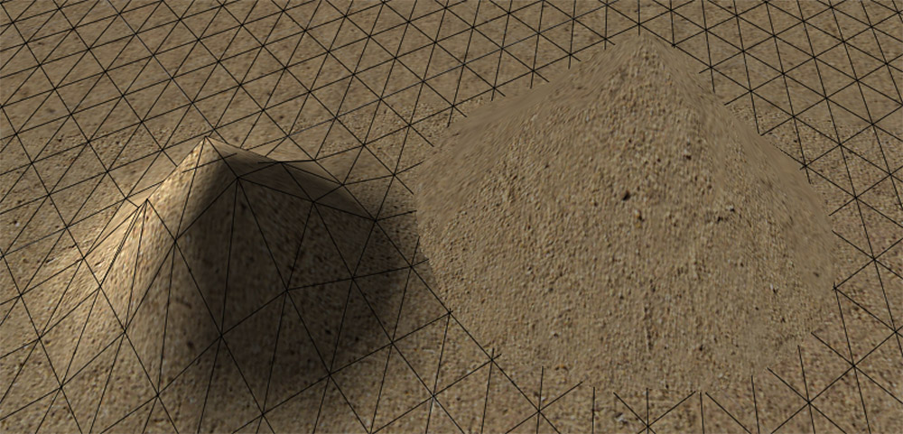

置换贴图 Displacement Mapping
2016-5-10
视差贴图和法线贴图都是使用特定的手段来达到欺骗视觉的目的，让人以为物体的表面是凹凸起伏的。而置换贴图却是真的将模型的顶点进行偏移，在原本的平面上创造出凹凸的效果。既然是对顶点进行偏移，那么就需要模型有足够多的顶点数量，否则达不到比较好的效果。为了达到足以置换的顶点数量，一般会使用 Tessellation 技术来增加低模的面数。查阅了相关资料，Tessellation 是 DirectX11 才有的技术，OpenGL 要到 4.0 才能使用。对于 Tessellation 知道的并不多，再加上移动平台根本无法使用，就没有去看这部分的内容，这里也不会涉及到。其实目前来看 Tessellation 技术并不是非用不可，很多情况下还是光照和贴图起到更大的作用。
看下要实现的效果，是一个转动的地球。地球的表面并不是平坦的，每一块陆地都是有凸起的，并且可以看到凸起的陆地上山脉和沟壑。球模型本身是 1200 面。
| 置换前效果 | 置换后效果 | 置换后效果 |
|---|---|---|
|  |  |  |
首先是在顶点阶段采样高度纹理，将采样到的颜色作为高度数据偏移顶点坐标（在顶点阶段采样纹理是sm3.0才支持的，我记得看到过什么资料上说 sm3.0 还是 2.0 是 DirectX 的叫法，和 OpenGL 没关系，不知道对不对。编译选项需要加上 #pragma glsl，让编译器把 cg 代码直接编译成 glsl，而不是中间代码，否则会报错）。可以看到如下效果。

// vertex shader
o.wnormal = mul (i.normal, (float3x3)_World2Object);
float dispValue = tex2D (_DisplacementMap, i.texcoord.xy).r * _DisplacementAmount;
o.wpos = mul(_Object2World, i.vertex);
o.wpos.xyz += o.wnormal * dispValue;
o.pos = mul(UNITY_MATRIX_VP, o.wpos);
地形表面已经有了凸起效果了。由于这里没有任何的光照计算，所以整体效果特别的平，没有体积感。到此为止还是很简单的，下面就是要加入光照计算。光照计算最重要的就是法线了，使用法线和光线进行计算来实现明暗效果，表现出物体的体积感。但是现在的问题是，由于模型表面已经不是平坦的了，而是凹凸不平的，如果还使用原来的法线信息肯定会得到错误的效果。
| 模型顶点的法线 | 置换顶点后错误的法线 | 置换顶点后正确的法线 |
|---|---|---|
|  |  |  |
只要能够计算出如右图所示的法线，再计算光照就不是什么难事了。我特意查看了下 Unity 文档中关于 Displacement Mapping 的代码，并在 Unity 编辑器中测试了下，光照效果是不正确的，因为当偏移顶点坐标的时候，并没有对法线进行调整。

从图中可以看到，左边的凸起是模型做出来的（可以看到网格），右边凸起是使用置换贴图实现的（看不到网格，使用的 Unity 文档中的代码实现）。问题就在于右边的光照是错误的，凸起的背光面并没有变暗，这正是因为偏移了顶点坐标后没有重新计算法线造成的。至于如何能够比较精确的计算出新的法线可以看这篇文章，作者对置换贴图进行了多次采样，通过计算高度差的方式实现的，感觉类似于 Unity 编辑器将灰度图转换成法线图的功能。然而我们这里使用另一种近似计算的方式，这种方式得到的结果并不是很精确，在模型边缘可能会出现瑕疵，但是计算量要小得多。我在设备上测试过，是可以得到比较好的效果。如果使用置换贴图后，光照效果的错误是可以忽略的，就不用调整法线了（和 Unity 一样，并且我看到很多类似的资料里也都没有讲到调整法线）。
下面就来说说如何来近似模拟计算调整后的法线。这里使用到的两个 cg 函数是 ddx 和 ddy。首先要说明的是 ddx 和 ddy 是在屏幕空间中的两个函数。如果写了这样的代码 ddx(x)，得到的结果就是下一个像素（一般当前像素的右边一个像素）的 ddx(x) 括号中的 x 的值，减去当前像素 ddx(x) 括号中的 x 的值。也就是两个像素的 x 值相差多少。ddy同理，只是描述的是纵向，而不是横向。在旋转的地球这个例子中，如果下一个像素并不是地球模型，而是其他模型，那就可能出现上文所说的边缘瑕疵，如果你不是太在意，一般不会注意到。之所以这两个函数能够做到这点，是因为 GPU 中 fragment 是并行的。原理说明白了就看下代码。
float4 frag(v2f i)
{
// 水平方向uv的增量
float2 uv_dx = ddx(i.uv.xy);
// 垂直方向uv的增量
float2 uv_dy = ddy(i.uv.xy);
// 当前置换距离
float height = tex2D(_DisplacementMap, i.uv.xy).r;
// 水平方向下一个像素点的置换距离
float height_h = tex2D(_DisplacementMap, i.uv.xy + uv_dx).r;
// 垂直方向下一个像素点的置换距离
float height_v = tex2D(_DisplacementMap, i.uv.xy + uv_dy).r;
// 水平方向置换增量
float t_h = (height_h - height) * _DisplacementScale;
// 垂直方向置换增量
float t_v = (height_v - height) * _DisplacementScale;
// 水平方向顶点坐标增量，作为一个假的tangent来使用
float3 fake_tangent = ddx(i.wpos);
// 水平方向顶点坐标增量，作为一个假的bintangent来使用
float3 fake_bintangent = ddx(i.wpos);
// 到这里为止，其实已经可以用 fake_tangent 差乘 fake_bintangent 来得到 fake_normal 了
// 但是会发现 fake_normal 并不平滑，用来计算光照会出现硬边
// 解决办法是使用从 vertex shader 传过来的 normal 来进行纠正，顶点上的 normal 是平滑的
// corss 部分就是用平滑的 normal 来重新计算新的 fake_tangent
// 后面加法是使用置换增量来对其进行扰动
float3 fake_tangent_new = cross(fake_bintangent, i.wnormal) + i.wnormal * t_h;
// 同理
float3 fake_bintangent_new = cross(i.wnormal, fake_tangent) + i.wnormal * t_v;
// 最终得到平滑的 fake_normal
float3 fake_normal = cross(fake_bintangent_new, fake_tangent_new);
fake_normal = normalize(fake_normal);
// 这里就可以使用这个 fake_normal 参与光照计算了
}
至此，所有的要点都说明了。最后我又在设备上进行了测试，发现当图形接口是 OpenglES 3.0 的时候显示效果是正确的，但是 Metal 就不正确了。最终发现 Metal 中 ddy 和 OpenglES 3.0 中的 ddy 返回值不同，第一反应是 Metal 在实现上应该不会出问题，因为两个图形接口在 ddx 的返回结果是一致的。我把最后一步求平滑的 fake_normal 的差乘两边交换了一下，变成 float3 fake_normal = cross(fake_tangent_new， fake_bintangent_new)，于是效果就正确了。这说明两个图形接口在处理 ddy 时，虽然都是纵向，但是方向相反。